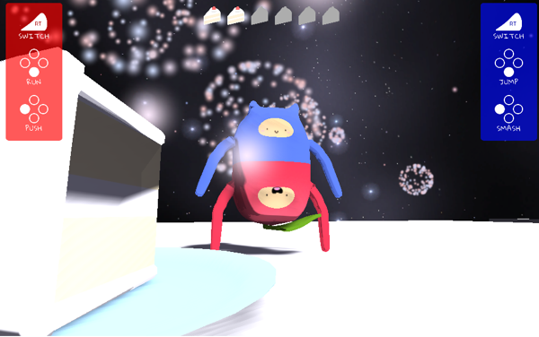

the projects I'm most proud of
fun side projects I have worked on


Doc Sprout's Daycare
For a senior year independent study project, I worked on a small team to bring a quirky plant nurturing game to life. As players raise plant “doods” that blossom to give “froot,” I grew as a game developer by adapting to constraints and giving space to experiment.
Role: game designer, developer, and artist
Skills: Unity, Blender, GitHub, play testing
Play the game | Link 2 | Link 3
I worked on the project from when it was just a seed in the brainstorming process and developed and iterated on it based on player feedback. Along with contributing to gameplay design and various programming tasks, I also created the overall visual aesthetic via art style and UI elements, including creating 3D models and textures for characters and objects, particle effects, and animations. I utilized simple geometries and gradient textures to establish a cheery and endearing aesthetic.
Although we over-scoped what we could create in 8 weeks, leading to a late core loop and team burn out, we stayed light on our feet, design-wise by cutting away unnecessary ideas that strayed from the essential experience. Weekly play testing and debriefing paved the way for constant iteration that allowed us to clarify and refine conveyance.
Working on this project cemented the power of balancing top-down and bottom-up design to execute a clear yet flexible vision in harmony with its mechanics. Doc Sprout’s Daycare also gave me the opportunity develop my teamwork infrastructure with code style and project management.
Ringo + Zingo
For a game design studio course, I worked with a team to create a 3D couch co-op platformer where players share controls of a single character to overcome obstacles. Working on this zany game helped me hone in on how to curate an experience by iteratively refining mechanics.
Role: game designer, developer, and artist
Skills: Unity, Blender, GitHub, play testing

I contributed to brainstorming the concept, shaping the intended experience, and creating 3D assets for the character and objects. To bring the character to life, I created an animation state machine. To convey our unconventional co-op controls, I designed icons and signs for the UI. Along with these design and visual elements, I helped program mechanics for various obstacles, player abilities, and collectibles.

Although the team clashed on level design, evaluating our various ideas objectively and creating new ones incorporating elements of each was key to unified final stages. Moreover, iterations on the flow of the levels informed by play test feedback helped form a more cohesive progression between levels. We felt the late addition of new mechanics would benefit the game by tightening player coordination, and this was made possible by proactive time management and task assignment.
Utilizing play testing helped refine what mechanics contributed to the intended co-op experience and resulted in a better understanding on how to accomplish our vision.
Patisserie Palette
I worked on my first game for a game design course. Over the span of a month, I worked with a partner to create a narrative-driven 2D puzzle adventure that is set in colorful and black-and-white parallel universes. This initial work has inspired me to continue making games.
Role: game designer, level designer, and artist
Skills: Unity, Photoshop pixel art
I worked with my partner to craft a story for players to unfold, write dialogue, and lay out the world. I created pixel art assets, including character sprite sheets, environment sprites, and UI animations. Using these assets, I helped design puzzles and world spaces.
My partner and I over-scoped our game, leaving us not enough time to create the content needed to establish a full story. We cut down the number of puzzles, reused assets when possible, and modified the story so that it ended logically. When stalled on a puzzle design, we sought inspiration from unexpected sources, such as Pokémon Fire Red/Leaf Green to create new puzzles that were interesting and visually pleasing.
I was very excited to create my first game and through this experience began to understand the various components that make up a game. I also understood the value of sourcing inspiration from genres and mediums outside the intended design as well as the importance of being flexible with the project’s scope.
Senreve
As a design intern at Senreve, I contributed both web and graphic designs. In this experience, I gained a deeper understanding of connecting to customers via a well-crafted and adaptive brand.
Role: design intern
Skills: web design, prototyping (Sketch), graphic design (Photoshop), branding design
I designed and prototyped two new pages for Senreve’s website informed by market research. My graphic designs were used to promote the brand and connect with customers via email newsletters. In doing so, I contributed to establishing a graphic design workflow.
When creating new designs for Senreve, I had to balance a thorough understanding of the existing brand with my vision of what the brand could be moving forward. By conducting thoughtful research, empathizing with the brand’s perspective as well as customers’ expectations and needs, I created new web and graphic designs that married message with aesthetic.
By working on an existing brand, I gained knowledge from prior work and also had the opportunity to learn that with care it is possible for an existing successful brand to continue to evolve. To do so requires empathy for all stakeholders.
Orbit

SLANT NU is a quarterly experimental multimedia magazine online. For Winter 2017, I combined my interests in illustration and VR to create a 3D experience of my artwork, demonstrating the theme of “rhythm.” Working with the collective was an extraordinary creative experience.
Role: collective contributor
Skills: WebVR, illustration, Google Cardboard, A-Frame

Working with the theme of “rhythm,” I illustrated a constellation in “orbit” represented by a female figure. Using the image as a texture for 3D shapes, I was able to create an orbiting system with my artwork embedded. The many constellation motifs had their own rhythm in space via cyclical animations.

I had to stretch my creative limits to create a fresh experience that demonstrated the theme. Bouncing ideas off the other collective members from various artistic backgrounds was invaluable to coming to my final result.
This experience solidified my belief in the power of interdisciplinary teams. After a long period of mostly technical projects, this artistic contribution was a breath of fresh air expanding my view on what’s possible between visual art and code.
shAIR / Hazumi

In a User Experience Design class, I went through a design cycle to discover a white space and design for it. The resulting Spotify plugin paired with a hardware device, collectively called shAIR, is designed to help people connect with each other by seeing when friends are listening to music. At the conclusion of the course, I began to understand my design philosophy and decided to continue pursuing this project as the foundation of my startup, Hazumi.
Role: UX Researcher and Designer at shAIR / Founder at Hazumi
Skills: UX research and design, Arduino
shAIR prototype | Hazumi prototype

I observed students on Northwestern’s campus to uncover a white space in social music experiences. After exploring and sharing many concepts in class, my team decided to flesh out a Spotify plugin that paired with a light-up star device. The device would alert users their friends are listening to music, whose current tracks were depicted on a map embedded in Spotify.

Despite being attached to our initial ideas, including speakers, playlists, and DJ apps, thorough research of the market and technological constraints allowed us to identify a meaningful final concept to pursue.
This project established the roots to my design philosophy: thoughtful design can bring wonder and connectivity to people’s lives. In addition, I am very excited to continue working on shAIR as my first entrepreneurial venture, Hazumi.